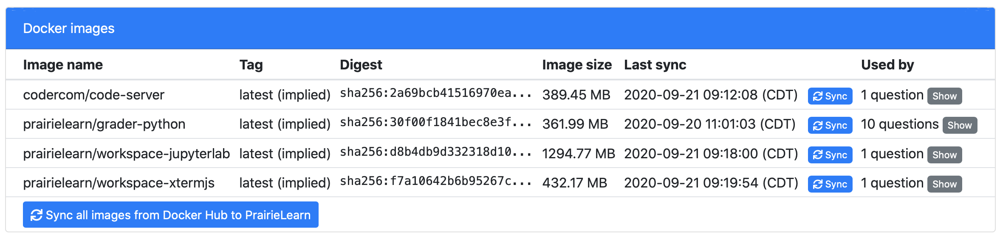

Dave Mussulman has implemented a new caching system for Docker images. These images are used by externally-graded code questions and workspaces. The new cache speeds up all image operations and also means that PrairieLearn can rapidly scale to handle bursts of load from external grading or workspaces.
However, there is now a required manual sync for Docker images, just like syncing course code from GitHub. The new image sync is also on the "Sync" page and works like the GitHub sync:
If you make your own image and push it to Docker Hub, you will now need to sync it to PrairieLearn before it can be used. The Docker image cache is global (not per-course) and the latest cached image version will be used at all times. If you want to use a specific image version then you can tag images and reference the specific tag.
On the backend, the new image cache stores the images in the Amazon Elastic Container Registry (ECR), which provides a private Docker registry with a highly available and scalable architecture.